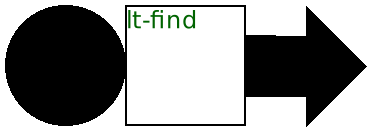
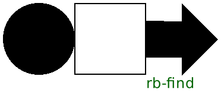

6 Pict Finders
在 pict 中找到 find 指定的 pict。
如果 find 是一个 pict,
那么这个 pict 必须是作为涉及 find 的某种组合而被创建的。
如果 find 是一个列表,那么 find 的第一个元素必须在 pict 之内, find 的第二个元素必须在第一个元素之内,以此类推。 一般来说,第 n+1 个元素必须在第 n 个元素内,所以列表可以提供一个指向某个特定 pict 的路径, 以防在 pict 内搜索的 pict 有多个出现。
Examples:
> (define p1 (disk 60)) > (define p2 (rectangle 60 60)) > (define p3 (hc-append p1 p2)) > (define p4 (hc-append p3 (arrow 60 0))) > (lt-find p4 p1)
0
0
> (cb-find p4 p2)
90
60
> (rb-find p3 p1)
60
60
> (lt-find p4 (list p1))
0
0
> (lt-find p4 (list p2 p1)) find-XX: sub-pict: #<pict> not found in: #<pict>
> (lt-find p4 (list p2))
60
0
> (lt-find p4 (list p3 p2))
60
0
> (pin-over p4 p2 lt-find (colorize (text "lt-find") "darkgreen")) 
> (panorama (pin-over p4 p2 rb-find (colorize (text "rb-find") "darkgreen"))) 
Changed in version 1.11 of package pict-lib: 删除了对某些中心坐标的隐式截断,使之成为整数。
procedure
(pict-path? v) → boolean?
v : any/c
Examples:
> (pict-path? null) #f
> (pict-path? (disk 30)) #t
> (pict-path? (list (disk 30) (rectangle 10 10))) #t
procedure
pict : pict-convertible?
创建一个 pict,它具有与 pict 相同的绘图和 bounding box ,
但它隐藏了它的所有子 pict,这样就不能用 lt-find 等函数找到它们。
如果 pict 有一个最后一行的 pict,那么清洗后的 pict 有一个新的最后一行的 pict,其形状和位置都相同。
Examples: